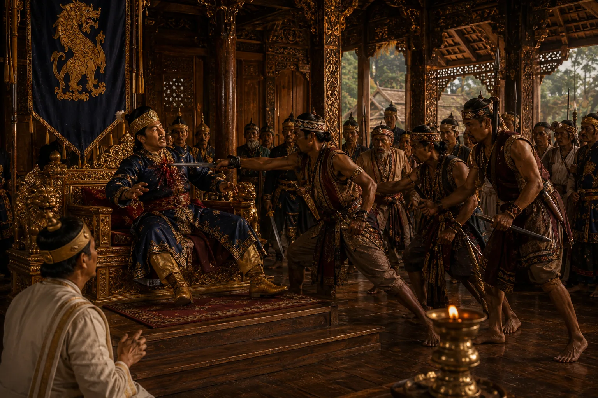

Foreign Captives Brought Before the Ahom Golden Throne
c. 1532 · Swarganarayan’s kingdom

Captured enemy generals, cavalry officers, and spoils of war presented before the Swarganarayan in solemn assembly.
Sources have not yet been catalogued for this record.
People: Suhungmung (Swarganarayan)
Open this scene in the interactive archive · Follow this event on MAP